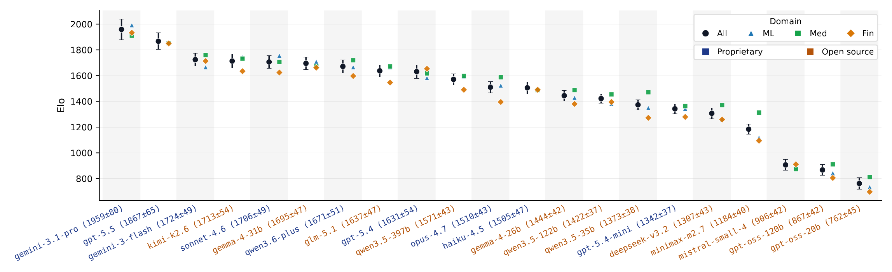
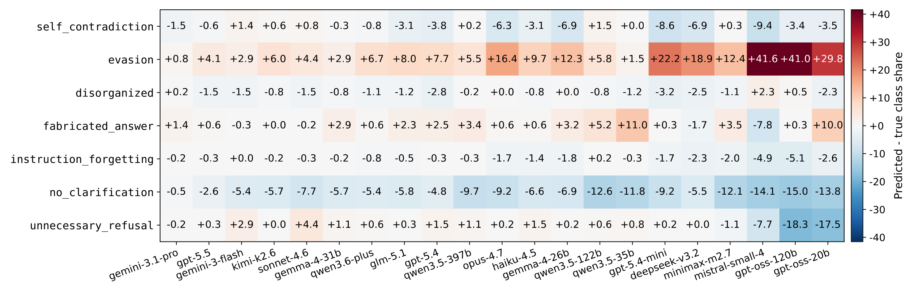
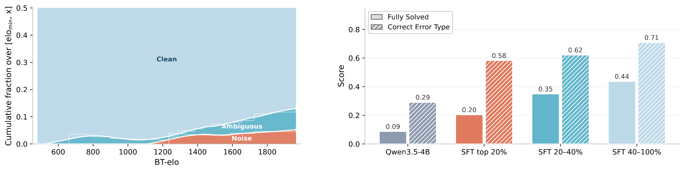
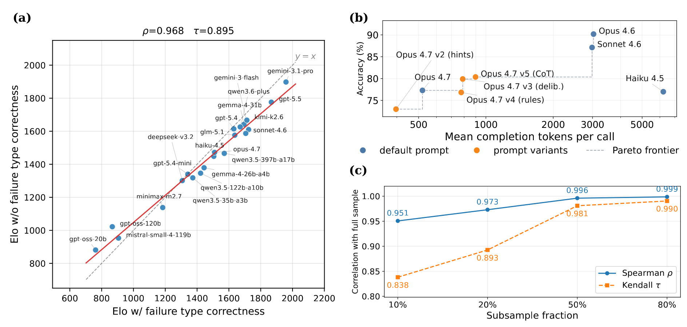

Abstract
As interactive LLM-based applications are created and refined, model developers need to evaluate the quality of generated text along many possible axes. For simpler systems, human evaluation may be practical, but in complicated systems like conversational chatbots, the amount of generated text can overwhelm human annotation resources. Model developers have begun to rely heavily on auto-evaluation, where LLMs are also used to judge generation quality. However, existing LLM-as-a-judge benchmarks largely focus on simple Q&A tasks that do not match the complexity of multi-turn conversations. We introduce RankJudge, a benchmark generator for evaluating LLM-as-a-judge on multi-turn conversations grounded in reference documents. RankJudge creates pairs of conversations where one conversation has a single flaw injected into one turn. This construction allows paired conversations to be labeled unambiguously as better or worse, and precisely isolates failure categories to individual turns, enabling a strict joint correctness criterion for judging. We implement RankJudge across the domains of machine learning, biomedicine, and finance, evaluate 21 frontier LLM judges, and rank those judges via the Bradley-Terry model. Our formulation also allows ranking each conversation pair with difficulty ratings, which we use to dynamically curate the evaluation slice to reduce label noise, as confirmed via human annotation. We find that judge rankings are stable under partial observability, coarser correctness criteria, and an alternative random-walk rating algorithm.
What's new
- Multi-turn, reference-grounded benchmark generator. Ground-truth verdict, flawed turn, and failure type are specified in the generation prompt and scored under a strict joint correctness criterion.
- Dual-conditioned generation. User behavior and assistant failure axes are independently controlled; a semi-automated discovery loop surfaces new failure types.
- Fully synthetic construction with quality gates. A three-layer automated verifier (coherence / adherence / grounding) plus Elo-based curation of the difficult tail, validated by human audit and held-out fine-tuning.
- Three domain instantiations. Machine Learning, Biomedicine, and Finance, spanning 21 proprietary and open-weight judges. Leaderboards are stable under subsampling and alternative ranking algorithms.
- Surfaces systematic class bias. Weaker judges collapse predictions onto a single failure category, exposing capability gaps that prompting alone cannot close.
Leaderboard
Bradley-Terry Elo of 21 LLM judges with 95% confidence interval. Click any column header to sort; filter by type or search by name. Best per column highlighted in green.
| # | Judge | All ▼ | ML | Med | Fin | Type |
|---|
Source: Table 1 in the paper. Elo is dimensionless and meaningful only as a ranking; ±values are 95% CIs from bootstrapping.
Results

21-judge leaderboard. Bradley-Terry Elo sorted by combined performance; black circles give the combined Elo with 95% CI, colored markers show per-domain Elo. Blue tick labels are proprietary judges; orange are open-source.

Per-class prediction bias. Each cell shows the difference between the judge's predicted share of a failure type and its ground-truth share, in percentage points; red is over-prediction, blue is under-prediction. Weaker judges collapse onto a single category.

Difficulty-based curation reduces label noise. Left: cumulative fraction of Noise / Ambiguous annotations among pairs with BT-Elo ≤ x. Noise concentrates at the top of the difficulty distribution. Right: fine-tuning Qwen3.5-4B on the top-20% slice underperforms training on cleaner slices.

Ranking robustness. (a) Judge Elo with vs. without failure-type correctness in the loss. (b) Accuracy vs. mean completion tokens for four default-prompt baselines and four opus-4.7 prompt revisions; the dashed step is the empirical Pareto frontier. (c) Rank correlation between the full-sample ranking and rankings recomputed on uniform subsamples. Rankings stay stable under partial observability.
BibTeX
@article{tang2026rankjudge,
title={RankJudge: A Multi-Turn LLM-as-a-Judge Synthetic Benchmark Generator},
author={Tang, Zhenwei and Liu, Zhaoyan and Hosseinzadeh, Rasa and Wu, Tongzi and Golestan, Keyvan and Cresswell, Jesse C},
journal={arXiv preprint arXiv:2605.21748},
year={2026}
}